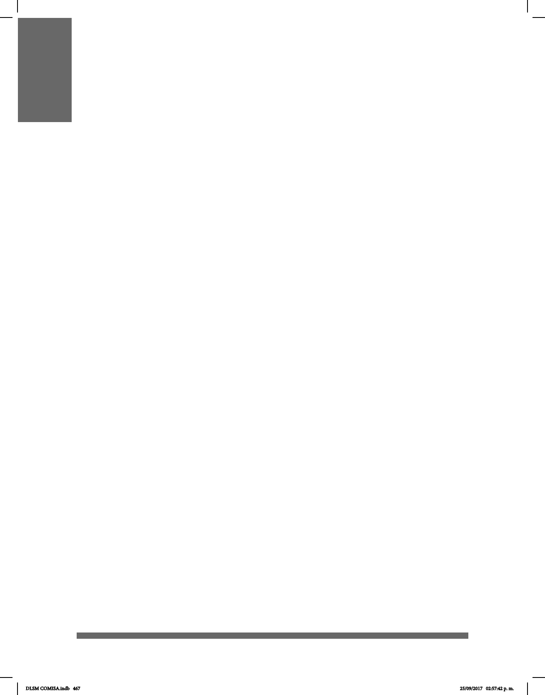

467
APÉNDICE 3. DACTILOLOGÍA
(DEFINICIÓN Y USO)
La dactilología es la representación manual de las letras del abecedario en español,
que acompañan a la Lengua de Señas Mexicana (LSM).
Los casos en los cuales se recurre a la dactilología son en las siglas: SEP, IMSSS para
los nombres cortos, los nombres propios, los neologismos, tecnológicos en su mayoría,
y cuando no se sabe la seña.
Se utiliza para facilitar la comunicación entre oyentes no competentes en LSM y sordos.
También en la interacción con sordo-ciegos para agilizar la comunicación.
Los sordos utilizan y comprenden la dactilología debido a que de alguna manera han sido
expuestos a la lectoescritura. La dactilología es una extracción de la lengua oral debido a
que la LSM carece de versión escrita ya que en sí misma es una lengua visual.
Las señas personales o apodos por lo general se expresan mediante señas que la
comunidad sorda acuerda, aunque es posible expresar los nombres propios mediante
la dactilología.
Cuando la comunidad sorda da un nombre a una persona, a partir de la convivencia con
ella y a partir de sus características y personalidad, en esta seña o apodo, se puede
utilizar las iniciales de su nombre.
A continuación, el abecedario en LSM para que puedas practicar lo mencionado
anteriormente.
DLSM COMISA.indb 467 25/09/2017 02:57:42 p. m.